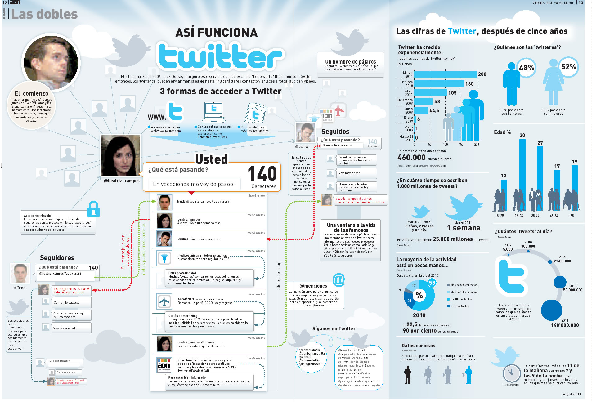

Twitter és un servei de microblogging creat el març del 2006 per Jack Doresey.
Twitter és un servei de microblogging creat el març del 2006 per Jack Doresey.
Es calcula que té més de 500 millons d'usuaris a tot el món i que es generen uns 65 millons de tuits cada dia.
El servei bàsic de Twitter és enviar missatges o en aquest cas dits "tiuts" curts i clars, ja que la plataforma només et deixa fer publicacions de fins a 140 caràcters que es mostren a la pàgina principal de l'usuari.
Funcionament

Funciona de la següent manera:
Tu quan estàs registrat i escrius un tuit (de no més de 140 caràcters com he dit abans), aquest és mostrat públicament a no ser que ho canviïs, quan el publiquis Twitter avisarà automàticament als usuaris que et segueixin i que et tinguin marcat com a preferit de que has escrit un tuit, i a tothom que et seguixi, encara que no et tingui als seus preferits, els sortirà a la seva pàgina d'inici. Funciona igual a l'inrevés, quan algú escriu un tuit, tu, si el tens marcat com a preferit i tens l'aplicació al mòbil t'enviarà un avís del tuit que ha publicat. Si només el segueixes et sortirà a la teva pàgina d'inici de Twitter.
(Clic a la imatge per fer-la més gran)
Funcions i Prestacions
Twitter ara s'ha convertit en una eina per comunicar-se, i ara una gran part de les notícies també es poden llegir per Twitter i si en segueixes els canals, et pots posar al dia fàcilment.
També et permet enviar (si en saps ja que és difícil resumir algunes coses només en 140 caràcters) molta informació amb molt poc temps i text.
Per una altre part, té una gran aventatge que és que una vegada configurat la part del mòbil també pots enviar i publicar tuits enviant SMS, així si no tens internet en un moment determinat, pots fer servir aquesta aplicació.
És una molt bona eina per a trobar feina, si segueixes a depèn de quines persones o usuaris.
I per acabar pots donar a conèixer la teva empresa i conèixer socis potencials per a aquesta fàcilment al Twitter.